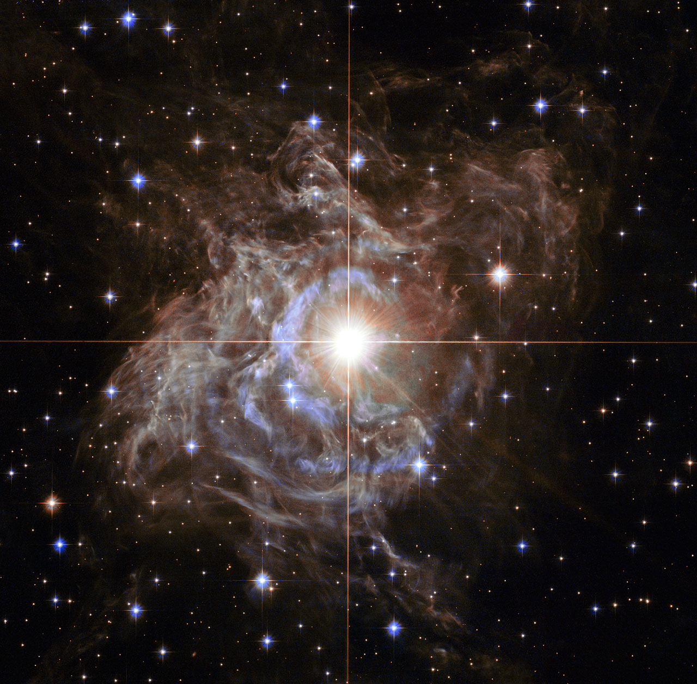

THE CEPHEID / RS PUPPIS
A star with
a useful rhythm.
A Cepheid brightens and fades as it pulsates. Its period carries information about its intrinsic luminosity: longer-period classical Cepheids are generally more luminous. Compare that calibrated luminosity with the light we receive, correct for extinction, and a distance becomes possible.
RS Puppis is an especially striking example, surrounded by dust that scatters its changing light. It illustrates what a Cepheid is; it is not presented as one of the individual stars fitted in this project.
What must be calibrated?
The period–luminosity zero point needs an absolute distance anchor. Parallaxes, eclipsing binaries and water masers provide geometric information. Metallicity, dust, photometric calibration and crowding also matter. Our analysis starts downstream of these steps, with published Cepheid-host moduli and their covariance.